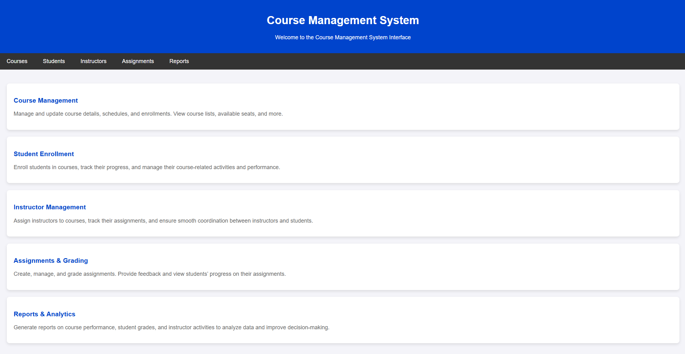

Table of Contents
System Architecture
The system is organized into functional modules to promote maintainability and clarity. These modules handle various aspects of the system:
- Course Catalog Management: This module handles the storage, retrieval, and management of course information.
- Course Management: This module represents course objects, including related components like course rolls and input validators.
- User Directory Management: Manages directories of users, separating students and faculty.
- Input/Output Operations: This module manages input/output operations, such as reading and writing data to files for persistence.
- Core Business Logic: This module contains the core business logic, including registration processes.
- User Interface: This module implements the graphical user interface.
- User Management: This module defines user classes, such as faculty and students.
- Schedule Management: This module manages user schedules for both faculty and students.
- Utility Functions: This module contains utility classes and data structures used throughout the system.
Key Features and Functionality
Pack Scheduler offers a comprehensive suite of features:
- Course Catalog Management: The system allows administrators to manage the course catalog, adding, updating, and removing courses.
- Student Registration: Students can register for courses, check course availability, and manage their schedules.
- Instructor Assignment: Administrators can assign instructors to courses.
- User Management: The system manages user accounts for students and faculty.
- Schedule Management: Both students and faculty can view and manage their schedules.
- Data Persistence: The system can load and save data to files, ensuring data persistence.
Data Structures and Algorithms
The system employs various data structures and algorithms for efficient operation:
- Lists: Used for storing collections of courses, users, and other entities.
- Maps: Potentially used for efficient lookups of courses by ID or users by username.
- Searching and Sorting: Algorithms for searching courses and users efficiently and sorting data for display.
- Validation: Input validation is performed to ensure data integrity.
User Interface
The user interface is built using Java Swing and includes panels for:
- Displaying and managing the course catalog.
- Managing faculty information.
- Handling the assignment of instructors to courses.
- Managing student information.
- Handling student registration processes.
- The main application window.
Development Process
The development of Pack Scheduler followed an iterative approach:
- Requirements Gathering: Defining the system's features and functionalities.
- Design: Designing the system architecture, data structures, and user interface.
- Implementation: Writing the code for the various components.
- Testing: Conducting unit tests and integration tests to ensure correctness.
- Refactoring: Improving the code's structure and readability.
Last Development Process
The last phase of development focused on refining existing features, addressing bugs, and improving the user experience. This included:
- Bug Fixing: Addressing any reported issues or errors in the system.
- Performance Optimization: Improving the system's speed and efficiency.
- Usability Enhancements: Making the user interface more intuitive and user-friendly.
- Documentation Updates: Ensuring the documentation is up-to-date and accurate.